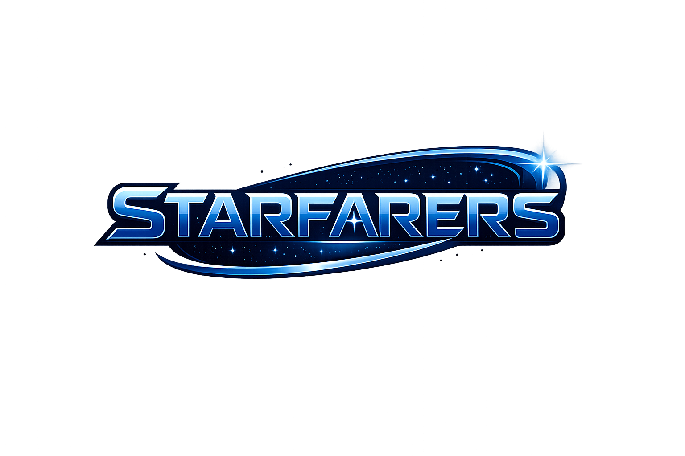

Grow your base
Develop a foothold, expand its capabilities and decide what sort of power you want to become.

Work in progress // V1 framework
Starfarers is a sci-fi strategy game for mobile, with a future browser version planned around base building, real-time battles and guilds.
Core systems
Starfarers is not hard science fiction. It is a social strategy game where the spectacle matters, but the people behind the fleets matter more.
Develop a foothold, expand its capabilities and decide what sort of power you want to become.
Fleet actions unfold in real time, rewarding preparation, timing and the ability to react when the plan immediately goes wrong.
Cooperation, rivalry and shared goals are intended to make guild identity a core part of the game rather than a decorative chat room.
Development log
The current prototype is being built in Unity. That gives us a practical route to the first mobile build while the future browser experience remains part of the plan.
Unity was powered up for the first time and the initial framework laid down. The game is still at the earliest stage, but the project has moved from planning into working code.
Next transmission: when there is something worth showing.Direction of travel
Establishing the game framework and proving the basic systems.
Turning base growth, combat and progression into something we can test.
Connecting individual progress to persistent group objectives and conflict.
Still being assembled